BSI Production · Built in-house · Fall 2026
Run the whole gig like clockwork.
Five apps that take an event from the gear order in our shop to the last cue on stage. Everyone sees the same plan, live, on whatever screen they're holding.
BSI Production · Built in-house · Fall 2026
Five apps that take an event from the gear order in our shop to the last cue on stage. Everyone sees the same plan, live, on whatever screen they're holding.
One gig, five apps
Draw the equipment plan once and it becomes the gear order. Release the order and it shows up on a technician's phone. Pack the truck and every case label links back to its page. Then run the show from the same kind of plan, cue by cue.
ShopCall · Web app · iPhone · Android
ShopCall is our equipment shop in your pocket. Build the gear order, pull it off the shelf, load the truck and check it all back in, with everyone looking at the same live list.
Every role gets its own home screen: what to act on, what's coming, and whether anything's broken. When nothing needs you, it says so.

Type it the way you'd say it. 6 sm58 adds six microphones. Every line shows how many are actually free on those dates, with other events and loans already taken out.
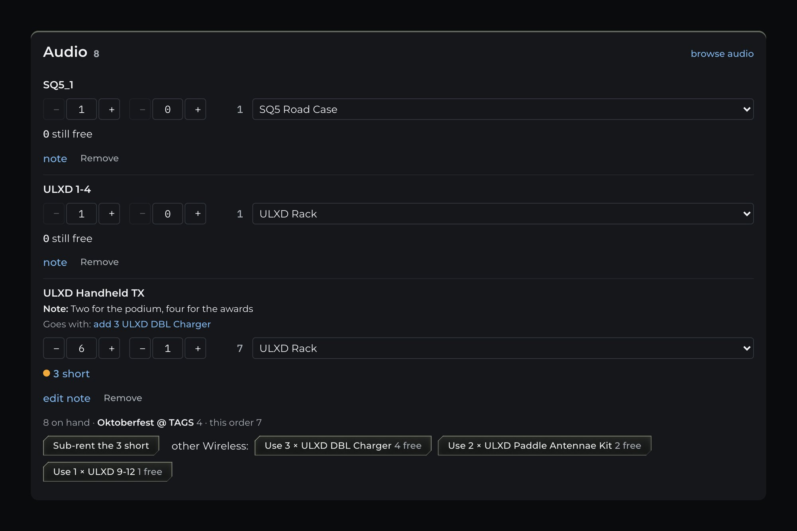

Technicians walk the order on their phone. Empty ring, not pulled. Dot, pulled. Truck, it's loaded. If the order changes mid-pull, the line tells them.


A big screen by the dock shows every event going out and coming back, with numbers you can read from across the room. It refreshes on its own.

Post to the bulletin board, add to the shopping list, or leave a note that stays on everyone's home screen until they tap Seen.
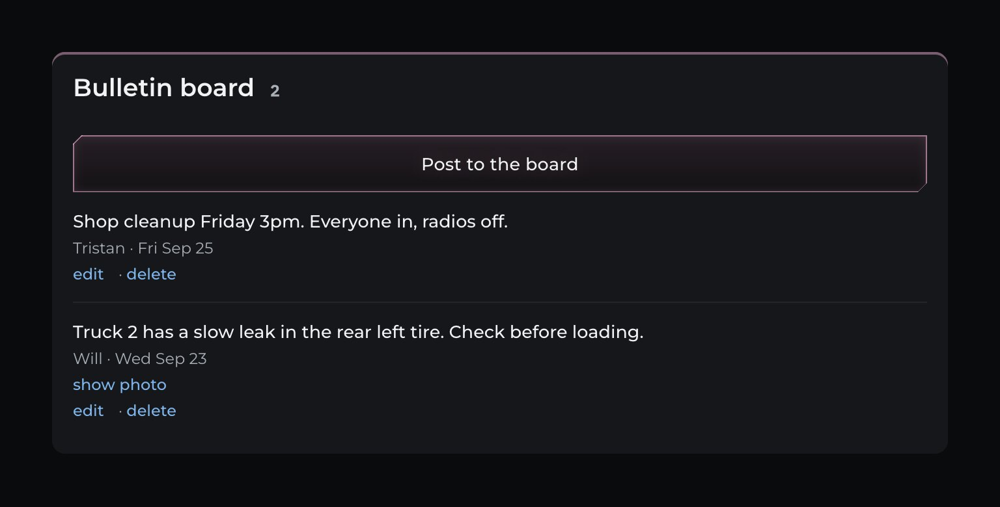
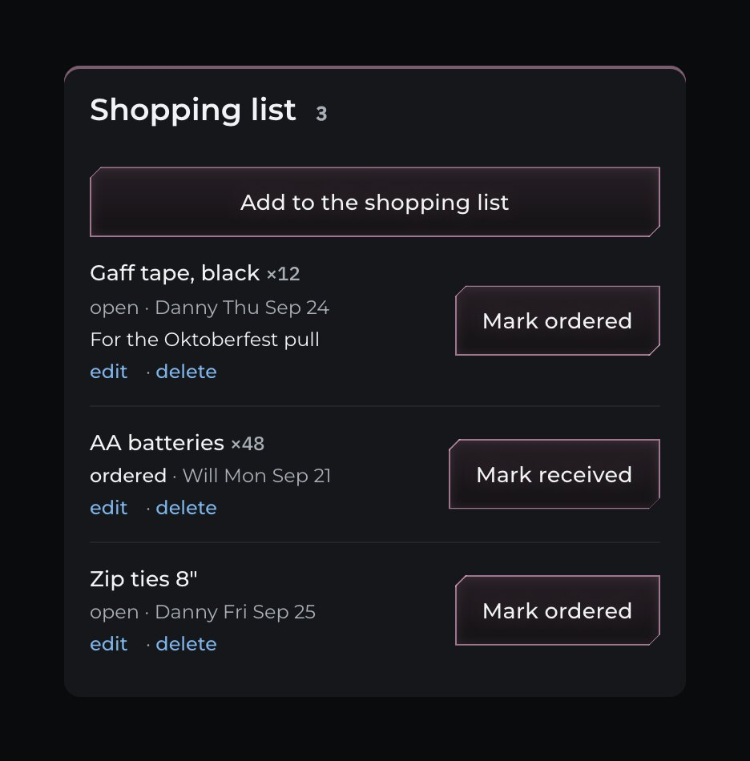
The desk, the office and the shop floor all see the same order, the moment it changes.
A home-screen app on iPhone and Android, with a QR scanner for every case tag.
Technicians, the office and the desk each see what they need and nothing they don't.
How an event moves through ShopCall.
StandBy · Mac · Stream Deck · any browser
StandBy is our digital cue sheet and show-calling tool. One Mac runs the show. Every crew member follows along live on their own laptop, tablet or phone, with nothing to install.
The next cue waits in amber. Hit Space and it goes live in green, with its clock running and the next one lined up behind it.


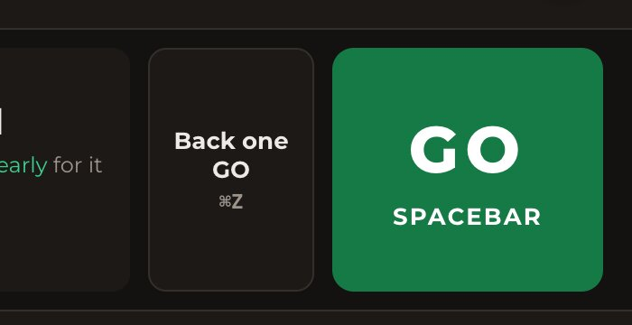
Speakers run long. Doors open late. Change a cue and every connected screen updates instantly, no reprints and no radio chatter.
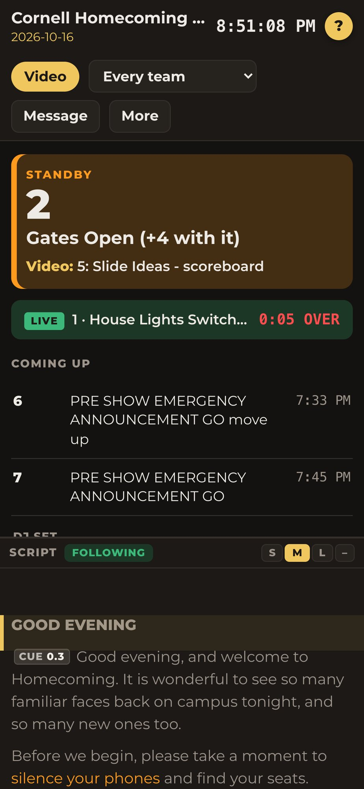
A backstage display for the green room. A giant countdown for the speaker. The full plan for the caller. Arrange each one by name from any laptop.

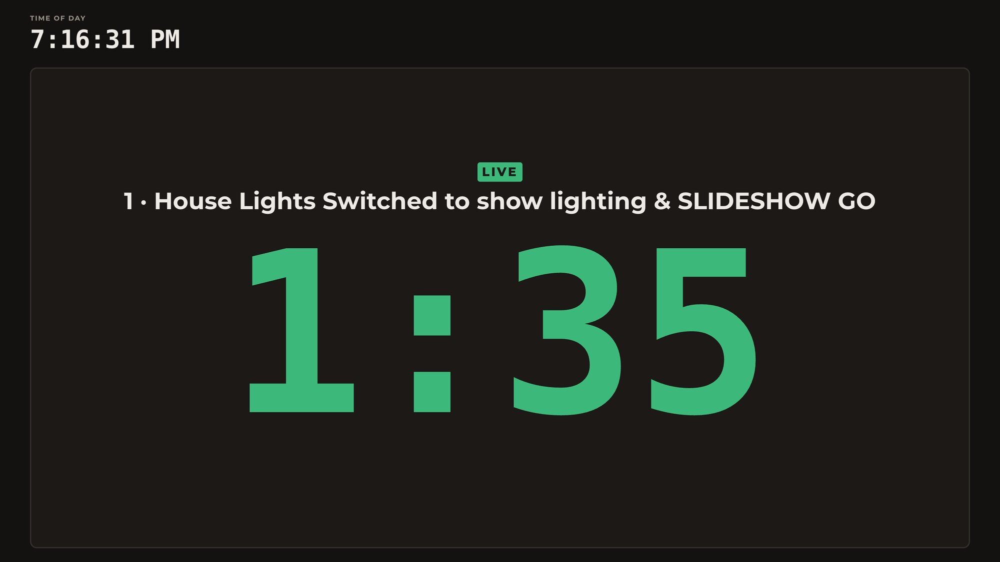
Paste the speaker's script from a Google Doc or Word. Drop cue marks into it, and the caller sees exactly how many lines are left before the next GO.

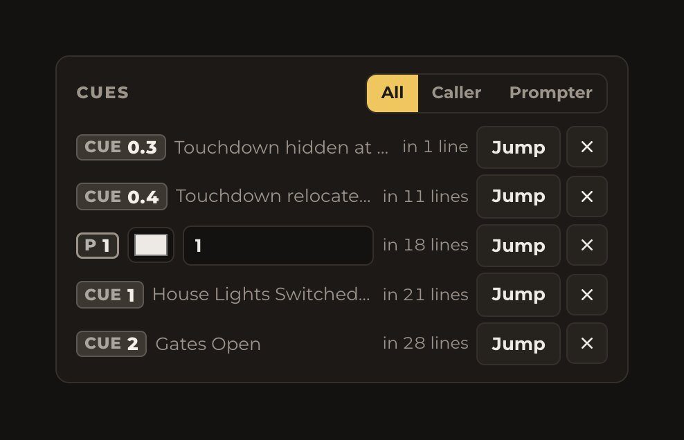
Practice privately while the crew screens stay put. Replay your rehearsal's reading pace. Lock everything down in Show mode so nothing pops up in front of the talent.
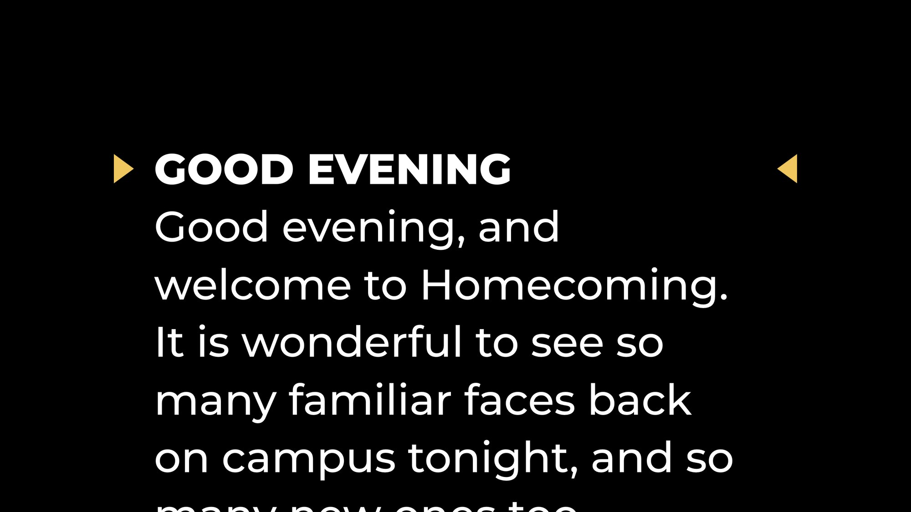
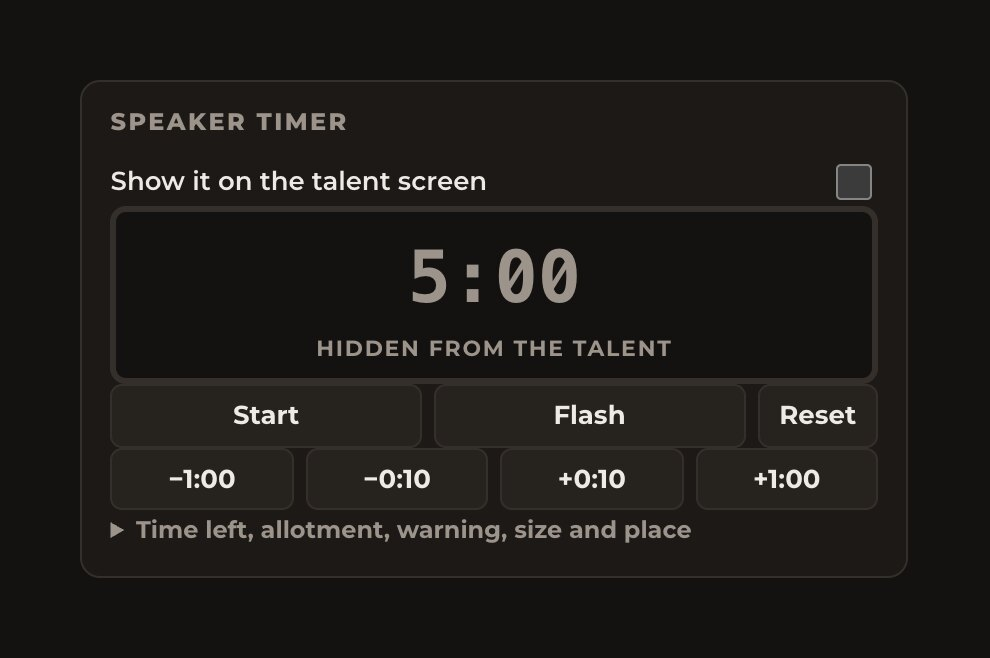
One Mac holds the show. Everyone else just opens a browser on the same Wi-Fi.
Write the run of show in the template, send it to StandBy, and pull the real timings back afterwards.
It never updates during a show, and a Stream Deck button can GO but never change the plan.
From the spreadsheet to the last GO.
PatchMap · Mac
PatchMap is where we plan every event's equipment: each console, camera and speaker, and every cable between them. That one drawing becomes the cable list, the labels, the pack list and the gear order.
Pick equipment from the library and drop it into racks, tables and areas of the venue. Click one socket, then another, and the cable is drawn.

Select a device to see all of its inputs and outputs. Select a cable to name it, label it and set its length.
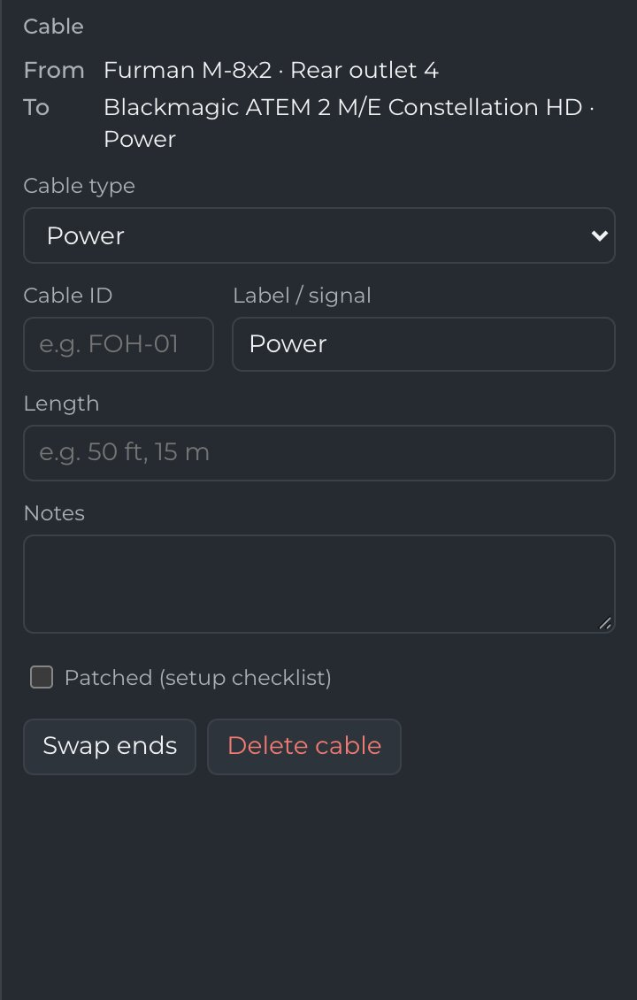
One line per cable: where it starts, where it ends, and what it carries. Tick each one off as it's connected on site.

Everything to pack, grouped by rack and area, with Out and Back ticks. One click sends it to ShopCall with live stock counts, so you know what's short before you ask.


Schematic, cable list, labels and pack list in one PDF, saved to the event's Drive folder.
Power is dashed, USB is dotted, fibre is a double line.
Cables without a label and gear with nothing plugged in get flagged.
Loader · Mac
Loader plans how every road case fits in the truck, in 3D, using our real cases and the rules that come with them. Then it prints the labels, the checklist and the unloading order.
Drop a case in and Loader puts it in the next open spot. Turn it, tip it, push it to the nose. The loading order builds itself as you go.


Every case knows what's packed in it. Colour the truck by contents and every group lights up: speakers, amp racks, consoles, cable.

Loader reads the event's order from ShopCall and lines up every case to pack. Place them one at a time, or let it pack the lot and pick from its best three plans.
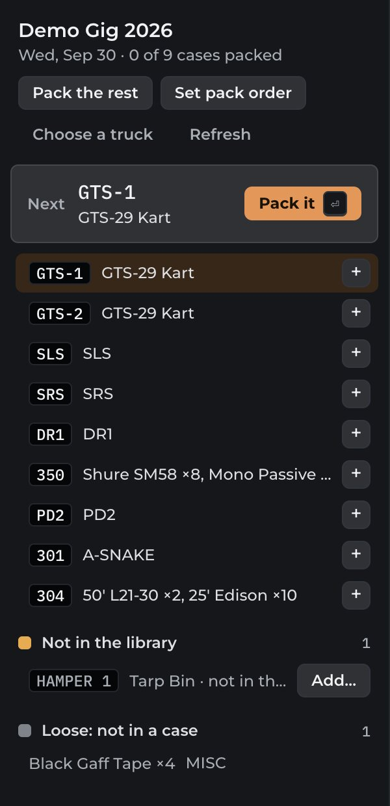
Every case in loading order with In and Out boxes. The same plan shows up in ShopCall, so the crew can unload from their phones.

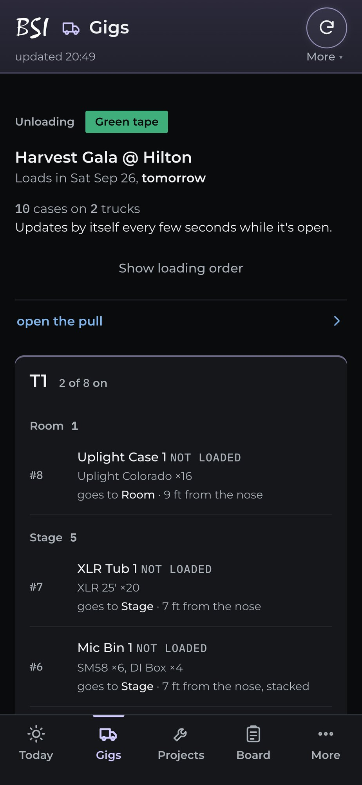
Walk the shop and describe each case: “Amp rack A, 30 by 24 by 40, 220 pounds, this side up.” Paste the transcript in and Loader reads it.
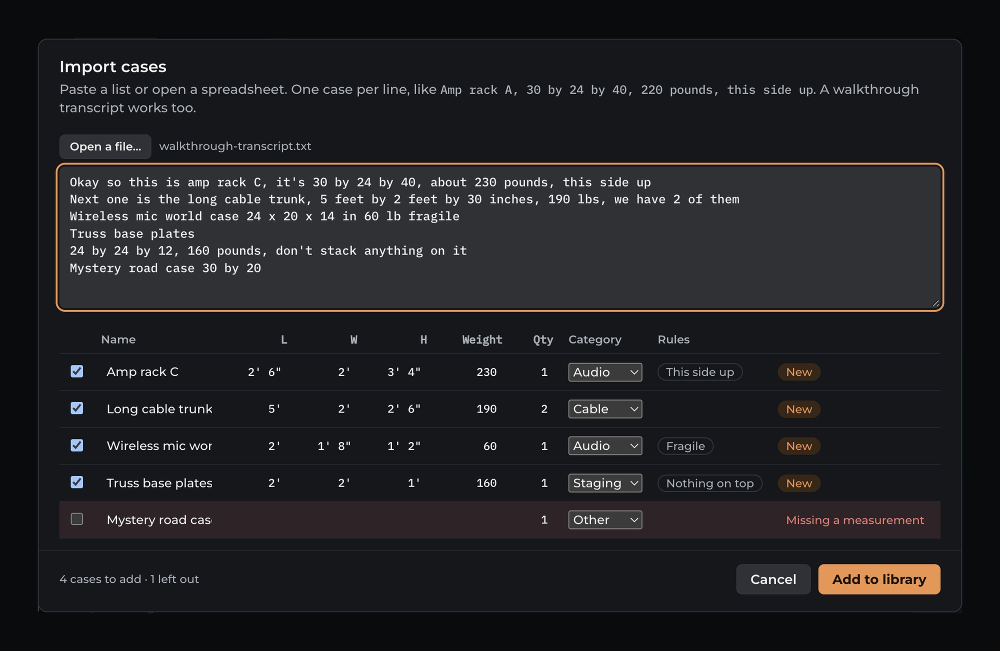
TrussTape · Mac BETA
Stage lights hang from truss, the metal beams above a stage. TrussTape turns the lighting designer's drawing into a full-size paper tape. Stick it on, and every light's label sits right where that light hangs.
Each label shows the light's number, channel, address, colour and job, printed on a ruler so the crew can measure as they go. It prints on an ordinary receipt printer.

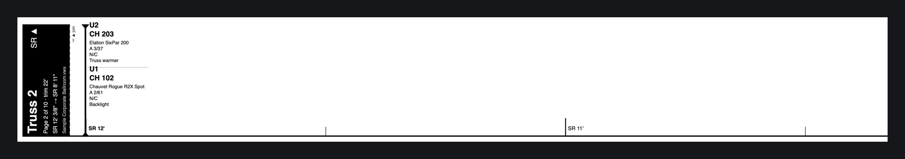
Run the export script in Vectorworks and TrussTape opens the plan with every truss and boom listed. Tick the details you want on each label.

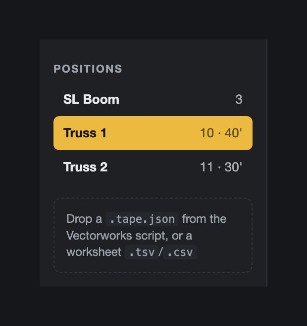
Under all of them
The Mac apps share one look, one manual layout, one feedback button and one way to update, so nobody has to relearn anything.
Small signed updates from our own feed, with one-click rollback. StandBy never updates mid-show.
Searchable help, what's new, and a guided tour on the ? key.
Send Feedback goes straight to the desk's inbox in ShopCall.
| App | Version | Runs on | Works with |
|---|---|---|---|
| ShopCall | shop @30 · Android 1.4 | Any browser, iPhone, Android | Google Sheets, Loader, PatchMap |
| StandBy | 0.2.15 | Mac, plus any browser on the Wi-Fi | Google Sheets, Stream Deck |
| PatchMap | 1.15.0 | Mac | ShopCall, Google Drive |
| Loader | 0.4.0 | Mac | ShopCall, PatchMap |
| TrussTape | 0.1.1 beta | Mac, any printer | Vectorworks |
BSI Production's own crew, for the way we actually work. They replace spreadsheets, printouts and a lot of phone calls.
No. ShopCall runs in any browser and installs to a phone's home screen. StandBy's crew screens open in a browser on the show's Wi-Fi. Only the planning apps run on a Mac.
Change it once. ShopCall updates every phone looking at that order, and StandBy updates every crew screen, instantly.
StandBy runs the show over the local Wi-Fi and can load its plan from a plain file. ShopCall needs a connection, since it works from our shared Google Sheets.
Yes. PatchMap sends its pack list to ShopCall, Loader reads orders from ShopCall and sends the truck plan back, and every case label has a QR code that opens it in ShopCall.
They check our update feed and install small signed updates themselves, and you can roll back in one click.
Want a walkthrough of any of these, or a look at how they'd fit your event? Get in touch.